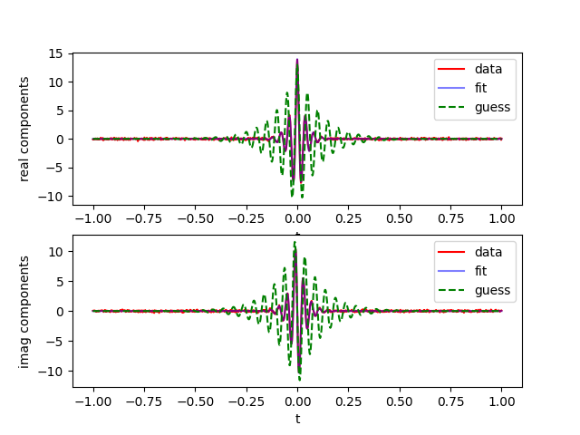

Note
Go to the end to download the full example code
Fit complex data¶
Using lmfitdata, fit a complex data set.
---------- logging output to /home/jmfranck/pyspecdata.0.log ----------
--> fit_complex.py(25):pyspecdata.core <module> 2024-10-13 21:55:40,991
INFO: Functional Form: A*exp(-6.28318530717959*I*nu*t)*exp(-pi*R*Abs(t))
import matplotlib.pyplot as plt
from numpy import exp, linspace, pi, random, sign, sin
import sympy as sp
from lmfit import Parameters, minimize
from lmfit.printfuncs import report_fit
import numpy as np
from pyspecdata import *
init_logging(level="debug")
np.random.seed(15816)
A, R, nu, t = sp.symbols("A R nu t", real=True)
# create an empty dataset that we will drop the fake data into
thisfit = lmfitdata(nddata(r_[-1:1:1001j], "t"))
thisfit.functional_form = (
A * sp.exp(-1j * 2 * pi * nu * t) * sp.exp(-R * sp.pi * abs(t))
)
logger.info(strm("Functional Form:", thisfit.functional_form))
# {{{ if you set only_real to True, it previously worked -- this
# example demonstrates that this also works when set to False
only_real = False
if only_real:
thisfit.functional_form = sp.re(thisfit.functional_form)
# }}}
# {{{ create the "true" parameters for the fake data by pretending like
# the true values are a guess, and then outputting the guess data
true_values = {"A": 14.0, "R": 10, "nu": 25}
thisfit.set_guess(true_values)
mydata = thisfit.settoguess().eval()
mydata.add_noise(0.1)
fig, (ax1, ax2) = plt.subplots(2, 1)
plot(mydata, "r", label="data", ax=ax1)
plot(mydata.imag, "r", label="data", ax=ax2)
# }}}
# {{{ set up the fit object using the "simulated" data
newfit = lmfitdata(mydata.C)
newfit.functional_form = thisfit.functional_form
newfit.set_guess(
A=dict(value=13.0, max=20, min=0.0),
R=dict(value=3, max=1000, min=0),
nu=dict(value=20),
)
# }}}
# {{{ show the guess
guess = newfit.settoguess().eval()
# }}}
# {{{ run the fit and generate nddata
# again, now that this is a class, why is this not handled by the fit method?
newfit.fit()
# {{{plot the data with fits and guesses
plot(newfit.eval(), "b", alpha=0.5, label="fit", ax=ax1)
plot(guess, "g--", label="guess", ax=ax1)
plt.ylabel("real components")
plt.legend()
plot(newfit.eval().imag, "b", alpha=0.5, label="fit", ax=ax2)
plot(guess.imag, "g--", label="guess", ax=ax2)
plt.ylabel("imag components")
plt.legend()
# }}}
plt.show()
Total running time of the script: (0 minutes 0.457 seconds)